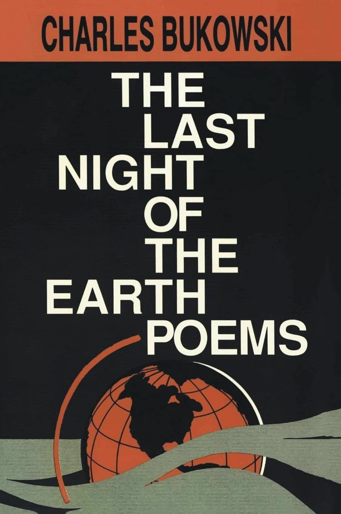
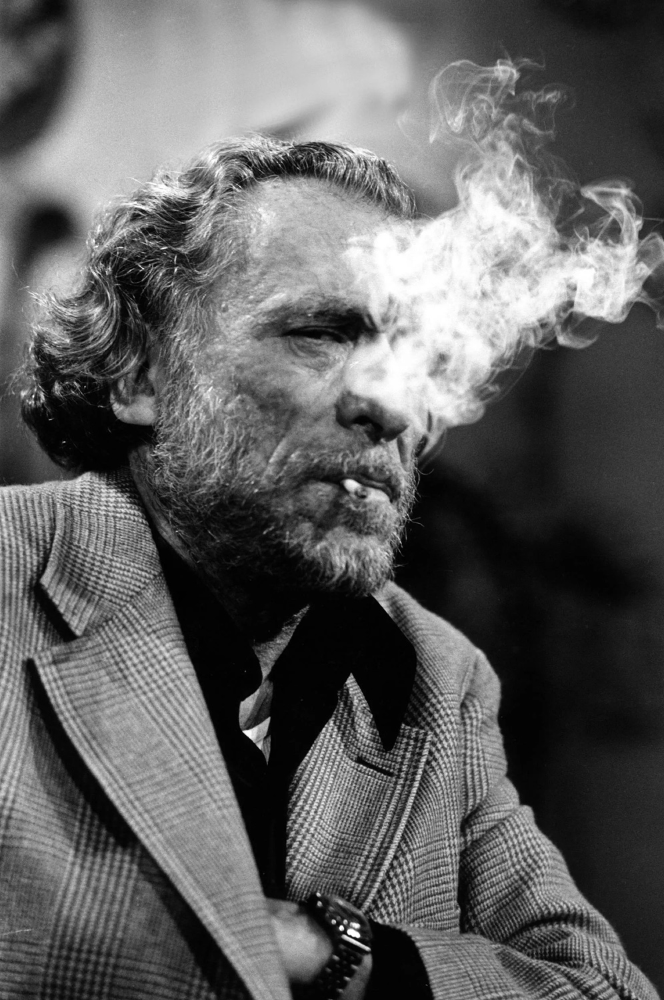

“Dinosauria, we” is a poem about the state of our world and a bleak vision of it’s future. It describes a society in decline, people stripped of all humanity and the ways in which that society finally crumbles to dust. Bukowski pulls no punches, memorably predicting in macabre horror that ”Radiated men will eat the flesh of radiated men”. The poem finishes with the sun looking down over the decimated earth in utter indifference reminding us all of the insignifigance of the human race.
It was included in the last collection of Charles Bukowski’s poetry published while he was still alive, titled Last Night of the Earth Peoms. Released in 1992 by Black Sparrow Press, this book is considered by many to be Bukowski’s greatest work.

Charles Bukowski was born in Andernach, Germany, on August 16, 1920, the only child of an American soldier and a German mother. At the age of three, he came with his family to the United States and grew up in Los Angeles. He attended Los Angeles City College from 1939 to 1941, then left school and moved to New York City to become a writer. His lack of publishing success at this time caused him to give up writing in 1946 and spurred a ten-year stint of heavy drinking. After he developed a bleeding ulcer, he decided to take up writing again. He worked a wide range of jobs to support his writing, including dishwasher, truck driver and loader, mail carrier, guard, gas station attendant, stock boy, warehouse worker, shipping clerk, post office clerk, parking lot attendant, Red Cross orderly, and elevator operator. He also worked in a dog biscuit factory, a slaughterhouse, a cake and cookie factory, and he hung posters in New York City subways.
Bukowski published his first story when he was twenty-four and began writing poetry at the age of thirty-five. His writing often featured a depraved metropolitan environment, downtrodden members of American society, direct language, violence, and sexual imagery, and many of his works center around a roughly autobiographical figure named Henry Chinaski. His first book of poetry was published in 1959; he went on to publish more than forty-five books of poetry and prose, including Pulp (Black Sparrow, 1994), Screams from the Balcony: Selected Letters 1960-1970 (1993), and The Last Night of the Earth Poems (1992). He died of leukemia in San Pedro on March 9, 1994.